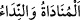

RABBİN MÛSÂ’YA
ŞÖYLE SESLENMİŞTİ
10-11. Hani Rabbin Mûsâ’ya: “O zalimler güruhuna, Fir’avn’un kavmine git.
Hâla (başlarına gelecekten) sakınmayacaklar mı onlar?” diye seslenmişti.
12. Mûsâ şöyle dedi: “Rabbim! Doğrusu, beni yalancılıkla suçlamalarından
korkuyorum.”
13. (Bu durumda) içim daralır, dilim dönmez; onun için Harun’a da elçilik ver.
14. Onların bana isnad ettikleri bir suç da var. Bundan ötürü beni
öldürmelerinden korkuyorum.
15. Allah buyurdu: “Hayır (seni asla öldüremezler)! İkiniz mucizelerimizle gidin.
Şüphesiz ki, biz sizinle beraberiz, (her şeyi) işitmekteyiz.
“Hani Rabbin Mûsâ’ya:” Küfür, mâsıyetler, İsrâiloğulları’nı köleleştirmek ve
oğullarını boğazlamak sûretiyle kendilerine zulmeden “O zalimler güruhuna,
Fir’avn’un kavmine git. Hâla (başlarına gelecekten) sakınmayacaklar mı onlar?”
diye seslenmişti.”
“ sesi yükseltmek demektir. Aslı rutûbet, çiğ ve ıslaklık demek olan “dandır. Ses için istiâre olarak kullanılması, ağzının ıslaklığı çok olanın kelamının güzel
olması bakımındandır. Bu yüzden fasîh konuşan kimse, tükrüğünün çok olması ile
vasfedilir.
Mânâ şöyledir: Ey Muhammed! Kavmine Allah Teâlâ’nın Mûsâ (a.s.)’a nidâ edip
onunla konuştuğu vakti ve o zaman meydana gelen hâdiseleri zikret. Bu, onun
Medyen’den dönerken ağacı ve ateşi gördüğü gecedir. Yine onlara Fir’avn kavminin
Mûsâ (a.s.)’ı tekzib etmeleri sebebiyle başlarına gelenleri anlat. Onların uğradıkları
musîbetin benzerinin kendilerine isâbet etmesinden onları sakındır.
“Kavmine git” demekle yetinilmesi, Fir’avn’un bu hükme dâhil olan ilk kişi olduğunun
meşhur/âşikâr olduğunu bildirmek içindir.
Mûsâ (a.s.)’ın onlara gönderilmesinin ardından “sakınmayacaklar mı onlar?”
ifâdesinin getirilmesi, uyarmak, zulümdeki aşırılıklarına ve düşmanlıktaki ifratlarına